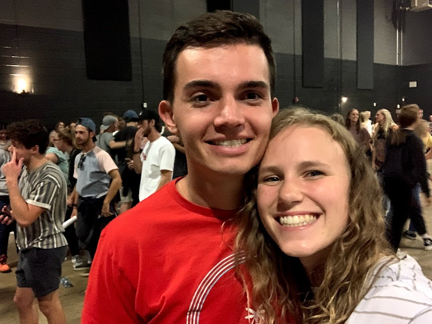

A little bit About Me
My name is Maysen Chesler! I currently attend BYU studying Experience Design and Management. I grew up in Tigard, Oregon with my four brothers and my parents. One of my favorite bands is Surfaces and above is a picture of me and my boyfriend at their concert. It was one of the most fun experiences of my life! (Click here to learn more about the band.) I enjoy many things, including lacrosse, but honestly I'm down to do anything outdoors. My last little random fact about me is that I love Dutch Bros and each month on the 1st, I go so I can get the free sticker they give out with a drink!